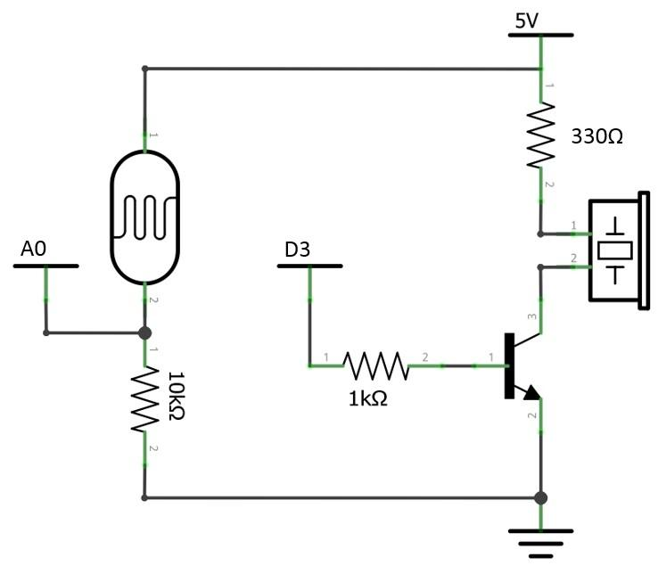
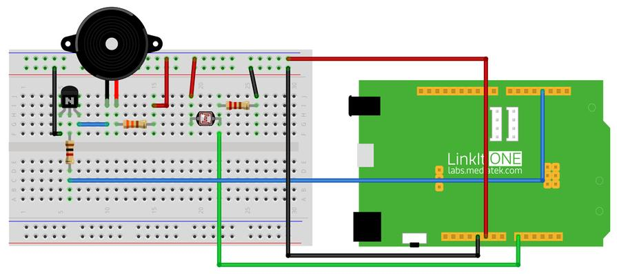

What We're Doing
It's time to know about new sensors that could make our projects even more interesting. A photoresistor (light dependent resistor or photocell) is a light sensor which varies its resistance value based on the intensity of the ambient light. A buzzer is a electro-acoustic device used to generate standard tone when it is connected to the power supply. Lets use both these components in our experiments.
Things you need
Schematic

Connection

Code
Please click on the button below to download the code for the kit:

You can unzip the file to the Examples folder of your Arduino IDE.
To access the demo code open:
File -> Examples -> Starter Kit for LinkIt -> Basic -> L8_Light_Control_Buzzer
const int pinBuz = 3; // pin define of LED const int pinLight = A0; // pin define of Light Sensor void setup() { pinMode(pinBuz, OUTPUT); pinMode(pinLight, INPUT); } void loop() { int value = analogRead(pinLight); value = map(value, 0, 1023, 255, 0); analogWrite(pinBuz, value); delay(100); }
Troubleshooting
Making it better
Lets control the tone of the buzzer further using the photoresistor. Different tones can be generated if you vary the light intensity that falls on the photo resistor. Upload the following code and observe the difference.
To access the demo code open:
File -> Examples -> Starter Kit for LinkIt -> Extend_Lesson –> L8_Buzzer_Music
More ideas
We can make more interesting applications using photocell. Try making a light-sensitive Christmas gift.
Reference